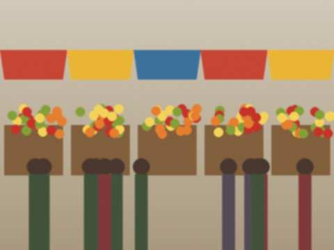

Archive for the ‘School’ Category
27 December 2009, 19:50
The first session! Constitutional law, Roman law (it's very old but very sensible), history of the state. I got 5, 5, 4. The lecturer of Roman law told us that the Romans invented the contract, I said "and the third person who punishes", and he looked at me. Then he gave me a 5.
Home for the holiday on Tuesday. I have in my bag one jar of jam (empty, to be refilled) and a lot of stories for grandmother.
20 September 2009, 21:20
I'm now a student. In the first lecture there were 140 of us, in the big hall, with the old wooden benches. The lecturer said: "Look to your left, look to your right. By Christmas one of you will not be here." Everybody looked very hard at each other. I think he says it every year.
My aunt's flat is near the Bazar-i Kalan: from the window you hear the bazaar from five in the morning. My cousin has the computer in the evenings and I have it on Sundays from three to four. So this exercise book must be shorter now.

The Bazar-i Kalan, seen from my aunt's window.20 July 2009, 19:30
I GOT IN. Law faculty of Talas State University, budget place. My uncle drove us to Talas to see the list on the wall and my name was the fourth from the top.
So this exercise book is almost finished. In Talas I will live with my aunt near the Bazar-i Kalan. Mama is already packing jam for me as if Talas has no food.
30 May 2009, 22:10
I wrote it!!! History, Iradi, maths, law as the extra. I brought TWO pens (thanks to Saltanat eje's advice and to Bekzhan from the internet whose pen died in 2005).
Now we wait for the results in July. I will go to the mosque with grandmother on Friday just in case.
16 May 2009, 21:30
Two weeks to the test. I count: maths (hopeless but improving), history (fine), Iradi (a few more essays), law (for the extra points). Mama gave me the key to the room where nobody goes, with the good desk. Grandmother makes me tea every hour, so I go to the toilet every hour. This is the system.
Also: I bought two pens. Not one. TWO. Saltanat eje's sacred law. Zarina bought three because she is afraid of what is in the middle.
23 November 2008, 19:00
I got 61 out of 100 in the first mock test. History 88, Iradi 74, maths 31. THIRTY ONE. Daniyar got 45 and says it is "a reasonable start". He says that about everything, even his haircut.
Saltanat eje stopped me in the corridor and said: "Maths is a language. You can learn any language." Then she said it was a lie but a useful one. I wrote it down.
27 September 2008, 15:40
Last year of school. We said it at the first lesson, everybody said "last year" and then everybody got scared. Our teacher gave us the plan: two mock tests before New Year, one before March, the real one in May.
I put a calendar on the wall above the bed with the real Synak day in red. Emil asked why I have a picture of a red box. I said: this is my future. He said: it is a box.
24 May 2008, 20:00
Today was the last bell for the big ones. Nurbek is in 12th! He wore a ribbon and carried a first-year girl on his shoulder with the bell, like in films. Mama cried. Grandmother said in her time the last bell was a real bell from the tractor station.
Next year it is me. I am scared of the Uluttuk Synak already.
The school yard after the last bell.
13 October 2007, 16:30
School started a month late because of the summer. Some of my class are gone. I will not write who. But Zarina is still here and now she talks all the time, she is the funniest girl in the class.
Saltanat eje said we teach, so we learn. That's her saying now.
30 September 2006, 16:50
In our new law lesson the teacher (young, from Talas, with a very serious tie) asked: "What is a contract?" Daniyar said: "When two people promise." The teacher said: "Close, but a promise can be broken for no reason. A contract is when two people promise and a third person can punish them if they break it."
I thought about it all the way home. At home grandmother said that in her time the third person was the old man of the street. I said: that is the same, grandmother! And she said: no, he had a longer beard.
1 September 2006, 18:15
First day of 9th class. New subject: law (only one hour a week but still!). Saltanat eje is our class teacher this year. She said the test is in three years and we must start now. Everybody groaned.
She has a blog on Kündölük too, about history. I will not tell her that I have one. (Saltanat eje if you read this: hello, I did my homework.)
18 February 2006, 17:20
Report cards on Friday. Algebra: 4. Iradi literature: 5. History: 5 (Saltanat eje only gives 5 if you have really read). Physics: 3, and I think the teacher gave it out of kindness. The physics teacher also runs a star club on Thursdays on the school roof, but that is only for the clever ones. It is the stars and the optics. I don't understand light. It just comes.
Mama signed the card and said nothing. Which is worse than anything she could say.